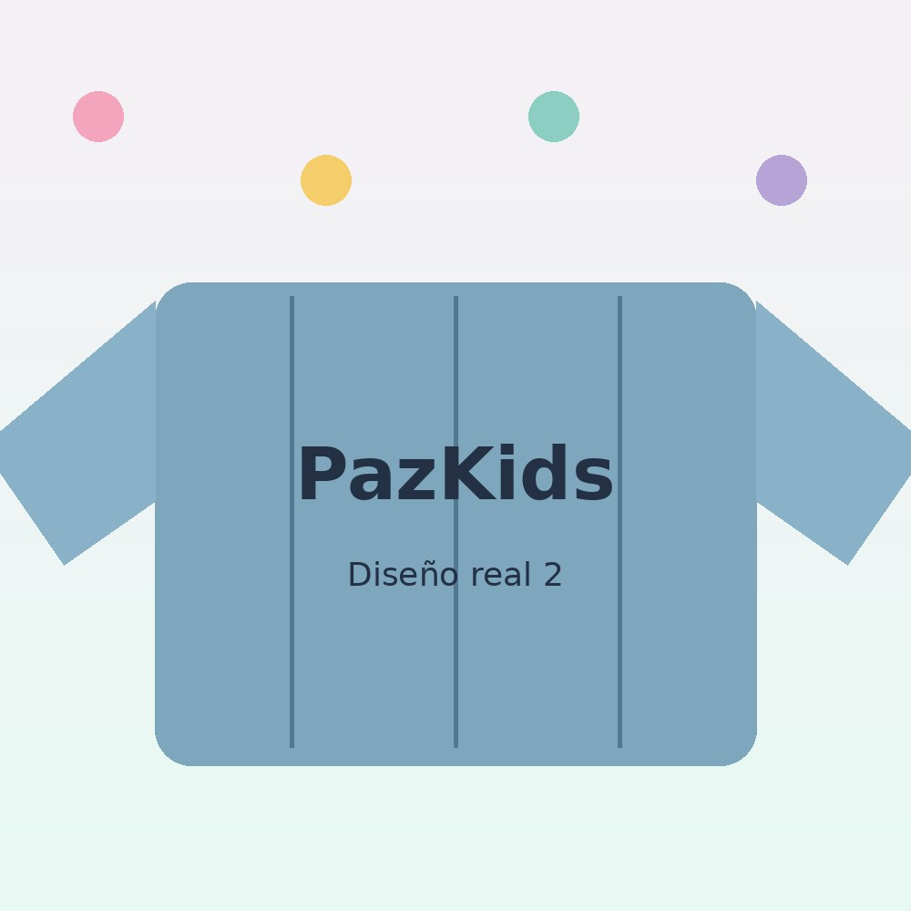
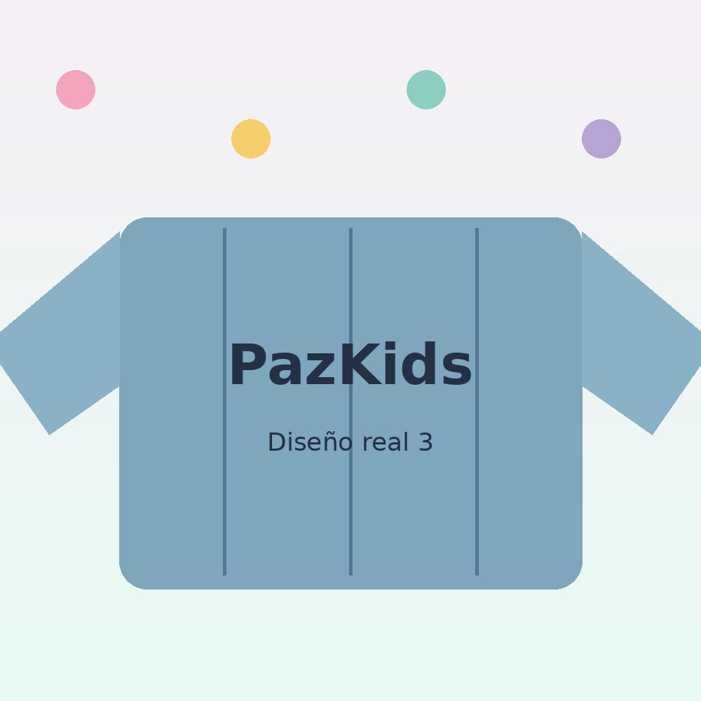
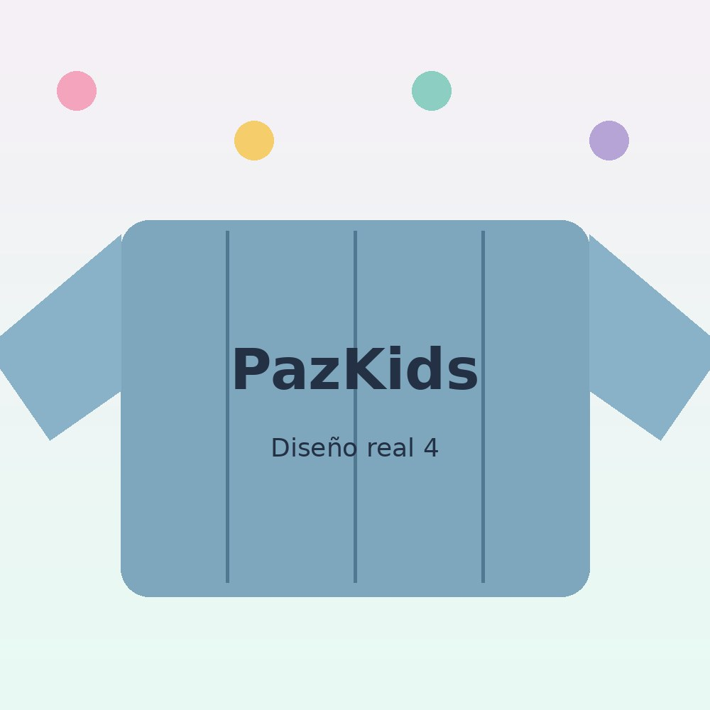

Denim resistente y suave
Una tela de jean pensada para acompañar el movimiento de los niños sin sentirse rígida, pesada ni incómoda.
Chaquetas de jean personalizadas para niños
En PazKids creamos chaquetas de jean infantiles con nombre, parches y detalles únicos. Prendas cómodas, resistentes y pensadas para que cada niño lleve algo verdaderamente suyo.

Más que ropa infantil: una prenda original, cómoda y con carácter propio.
El diferencial PazKids
La ternura está en los detalles; la confianza está en la calidad de la prenda, la caída del denim y el cuidado de cada personalización.
Una tela de jean pensada para acompañar el movimiento de los niños sin sentirse rígida, pesada ni incómoda.
Diseño unisex, fácil de combinar y con una silueta limpia para uso diario, viajes, cumpleaños y regalos especiales.
Nombres, colores y parches seleccionados para que la chaqueta hable de sus gustos, sueños y personalidad.
Cada chaqueta lleva el detalle de marca en cuero: un sello pequeño, cuidado y reconocible.

Hechas para acompañarlos
Una chaqueta de jean no pasa de moda. Se usa, se combina, se hereda, aparece en fotos familiares y puede convertirse en una de esas prendas que se recuerdan con cariño.
Por eso cada PazKids se piensa como una mezcla entre moda, juego y memoria: una chaqueta cómoda para ellos y significativa para quienes la regalan.
Ver cómo funcionaNuevo personalizador web
Elige el nombre, prueba colores, combina parches, mueve detalles y visualiza la idea antes de hacerla realidad. Una forma más fácil, bonita y familiar de personalizar con PazKids.

Diseños con personalidad
Usa esta galería con fotos reales de tus chaquetas. La fuerza de PazKids está en mostrar prendas verdaderas, nombres reales y detalles que las familias quieren guardar.




Proceso sencillo
Selecciona el modelo base y empieza a imaginar cómo quieres que se vea.
Agrega nombre, prueba colores y combina parches que representen su mundo.
Visualiza el diseño antes de enviarlo y ajusta los detalles importantes.
Te acompañamos por WhatsApp para confirmar disponibilidad, tiempos y entrega.
Preguntas frecuentes
Sí. El diseño es unisex y se adapta a diferentes estilos según los parches, colores y detalles elegidos.
Sí. La personalización permite combinar nombre, colores y parches para crear una chaqueta con identidad propia.
Los parches hacen parte de la personalización de la chaqueta PazKids. Son seleccionados y aplicados como detalles de diseño, pero no son fabricados directamente por la marca.
Puedes crear o elegir tu diseño y luego escribirnos por WhatsApp o Instagram para confirmar disponibilidad, precio y tiempos de entrega.
La marca tiene presencia en Colombia y Panamá. Confirma por WhatsApp la cobertura, tiempos y condiciones de envío para tu ciudad.
Diseña una prenda original, cómoda y llena de detalles que hablen de quien la usa.